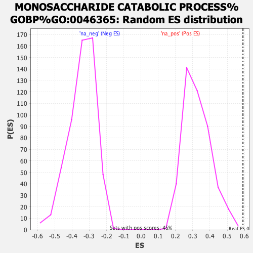

| | | Dataset | ER_ranked_genelist |
| Phenotype | NoPhenotypeAvailable |
| Upregulated in class | na_pos |
| GeneSet | MONOSACCHARIDE CATABOLIC PROCESS%GOBP%GO:0046365 |
| Enrichment Score (ES) | 0.5913211 |
| Normalized Enrichment Score (NES) | 1.81532 |
| Nominal p-value | 0.0022222223 |
| FDR q-value | 0.24552469 |
| FWER p-Value | 0.932 |
Table: GSEA Results Summary
 Fig 1: Enrichment plot: MONOSACCHARIDE CATABOLIC PROCESS%GOBP%GO:0046365
Fig 1: Enrichment plot: MONOSACCHARIDE CATABOLIC PROCESS%GOBP%GO:0046365
Profile of the Running ES Score & Positions of GeneSet Members on the Rank Ordered List
| SYMBOL | RANK IN GENE LIST | RANK METRIC SCORE | RUNNING ES | CORE ENRICHMENT | | 1 | PGK1 | 1 | 10.262 | 0.1864 | Yes |
| 2 | PKM | 53 | 4.886 | 0.2712 | Yes |
| 3 | HK1 | 80 | 4.309 | 0.3475 | Yes |
| 4 | AKR1A1 | 128 | 3.742 | 0.4118 | Yes |
| 5 | TKFC | 257 | 2.944 | 0.4554 | Yes |
| 6 | ENO2 | 275 | 2.851 | 0.5058 | Yes |
| 7 | PFKP | 376 | 2.418 | 0.5420 | Yes |
| 8 | KHK | 763 | 1.604 | 0.5412 | Yes |
| 9 | CRYL1 | 1079 | 1.260 | 0.5396 | Yes |
| 10 | FOXK2 | 1242 | 1.122 | 0.5474 | Yes |
| 11 | TPI1 | 1255 | 1.112 | 0.5667 | Yes |
| 12 | ALDOC | 1297 | 1.079 | 0.5831 | Yes |
| 13 | HK2 | 1708 | 0.818 | 0.5662 | Yes |
| 14 | ENO3 | 1814 | 0.765 | 0.5719 | Yes |
| 15 | GALM | 1877 | 0.731 | 0.5804 | Yes |
| 16 | PFKM | 1905 | 0.716 | 0.5913 | Yes |
| 17 | PGAM2 | 2424 | 0.502 | 0.5602 | No |
| 18 | GLYCTK | 2554 | 0.459 | 0.5586 | No |
| 19 | DHDH | 2592 | 0.446 | 0.5638 | No |
| 20 | GAPDHS | 2825 | 0.381 | 0.5527 | No |
| 21 | GALK1 | 2909 | 0.362 | 0.5529 | No |
| 22 | FUT10 | 3153 | 0.305 | 0.5395 | No |
| 23 | DCXR | 3353 | 0.264 | 0.5289 | No |
| 24 | FUT1 | 3648 | 0.215 | 0.5100 | No |
| 25 | FOXK1 | 3650 | 0.215 | 0.5138 | No |
| 26 | FUT8 | 3830 | 0.188 | 0.5033 | No |
| 27 | XYLB | 4228 | 0.133 | 0.4749 | No |
| 28 | FUT2 | 6270 | -0.074 | 0.3179 | No |
| 29 | LRP5 | 6410 | -0.090 | 0.3087 | No |
| 30 | NUDT5 | 6655 | -0.115 | 0.2919 | No |
| 31 | ALDOA | 6746 | -0.124 | 0.2872 | No |
| 32 | FUT4 | 7256 | -0.177 | 0.2509 | No |
| 33 | GALE | 7729 | -0.235 | 0.2185 | No |
| 34 | FUT7 | 8160 | -0.289 | 0.1904 | No |
| 35 | RPE | 8404 | -0.321 | 0.1774 | No |
| 36 | PGAM1 | 8819 | -0.389 | 0.1523 | No |
| 37 | FUT9 | 9153 | -0.447 | 0.1346 | No |
| 38 | GALT | 9745 | -0.564 | 0.0990 | No |
| 39 | GPI | 9926 | -0.606 | 0.0960 | No |
| 40 | PGM2 | 10281 | -0.690 | 0.0811 | No |
| 41 | ENO1 | 11417 | -1.089 | 0.0128 | No |
| 42 | GAPDH | 11691 | -1.230 | 0.0140 | No |
| 43 | SORD | 11744 | -1.257 | 0.0328 | No |
| 44 | PGM2L1 | 11958 | -1.425 | 0.0421 | No |
| 45 | PFKL | 12326 | -1.828 | 0.0469 | No |
Table: GSEA details [plain text format]

Fig 2: MONOSACCHARIDE CATABOLIC PROCESS%GOBP%GO:0046365: Random ES distribution
Gene set null distribution of ES for MONOSACCHARIDE CATABOLIC PROCESS%GOBP%GO:0046365